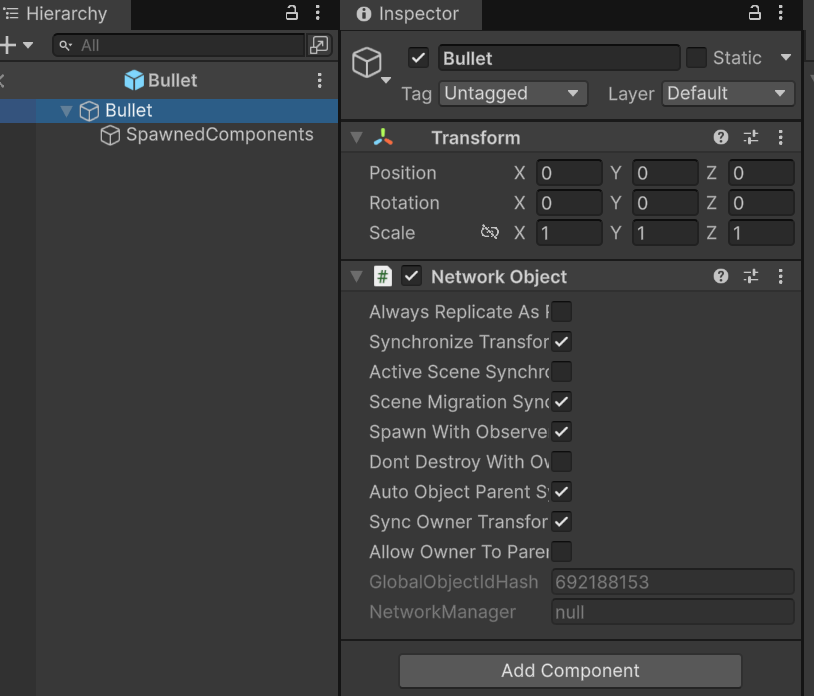
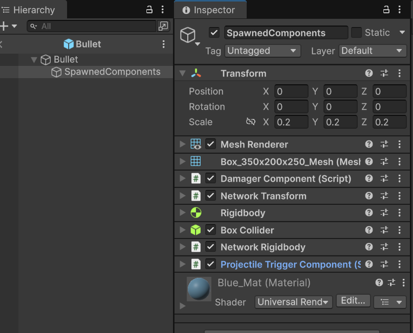

Exercise 7: ObjectPooling, spawning and despawning objects
By the end of this exercise you should have an understading of the concept of object pooling and spawning and despawning networked objects.
Check the following links to get more in deep with spawning and despawning object with ownership:
Shooter Component
We can create our shooter component that could look something like the following code:
using System;
using Unity.Netcode;
using UnityEngine;
using UnityEngine.InputSystem;
public class ShooterComponent : NetworkBehaviour
{
[SerializeField]
private Transform spawnTransform;
public override void OnNetworkSpawn()
{
if (!IsOwner)
{
enabled = false;
}
}
void Update()
{
if(Keyboard.current.tKey.wasPressedThisFrame)
{
ShootServerRpc(spawnTransform.position, spawnTransform.rotation);
}
}
[Rpc(SendTo.Server)]
private void ShootServerRpc(Vector3 pos, Quaternion rot)
{
EventManager.OnBulletShot?.Invoke(pos, rot);
}
}
*Note that, this script depends on the player's input, is not decoupled.
The event OnBulletShot is called on server to communicate with the PooledDynamicSpawner script in order to instantaite the bullet, we will cover that script later in the exercise. This component doesn't know what object is going to spawn, is just communicates that and object needs to be spawned.
EventManager
Example of a possible EventManager:
using System;
using UnityEngine;
public static class EventManager
{
public static Action OnPlayerDied;
public static Action OnHealthChanged;
public static Action OnShootPressed;
}
Projectile Trigger Component
The following code shows how the bullet behaviour, basically, a trigger collision that does something when something enters in its trigger. It has a timer controlled by a coroutine so it despawns passed that time.
using System.Collections;
using Unity.Netcode;
using UnityEngine;
[RequireComponent (typeof (DamagerComponent))]
[RequireComponent (typeof(Collider))]
[RequireComponent(typeof(Rigidbody))]
public class ProjectileTriggerComponent : NetworkBehaviour
{
[SerializeField]
private float timeToDespawn = 4.0f;
[SerializeField]
private float speed = 1.0f;
DamagerComponent damagerComponent;
Collider colliderComponent;
Rigidbody rigidbodyComponent;
void FixedUpdate()
{
if(!IsServer) return;
rigidbodyComponent.linearVelocity = transform.forward * speed;
}
public override void OnNetworkSpawn()
{
damagerComponent = GetComponent();
colliderComponent = GetComponent();
rigidbodyComponent = GetComponent();
colliderComponent.isTrigger = true;
if(IsServer)
StartCoroutine(DespawnOnTime());
}
public void OnTriggerEnter(Collider other)
{
if(other.TryGetComponent(out NetworkObject networkObject) && IsClient)
{
damagerComponent.Damage(networkObject);
DespawnParentServerRpc();
}
}
private IEnumerator DespawnOnTime()
{
yield return new WaitForSeconds(timeToDespawn);
DespawnParentServerRpc();
}
[Rpc(SendTo.Server)]
private void DespawnParentServerRpc()
{
if(transform.parent.TryGetComponent(out NetworkObject parentNetworkObject))
parentNetworkObject.Despawn();
}
}
The Bullet Prefab
The important part here is the DespawnParentServerRpc() function, remember that the server is the only one with authority to spawn and despawn objects. However the method is despawning the parent object. This is because the prefab of the networked object should have its NetworkObject Component separated from its SpawnedComponents. Something like this:


When a client disconnects, all network prefab instances dynamically created during the network session will be destroyed on the client-side by default. If you don't want that to happen, set the DontDestroyWithOwner field on NetworkObject to true before despawning.
If you have GameObject children, with NetworkBehaviour components attached, of a parent GameObject, with a NetworkObject component attached, you can't disable the GameObject children before spawning or despawning. Doing so can cause unexpected results and it's recommended to make sure all children are enabled in the hierarchy before spawning or despawning.